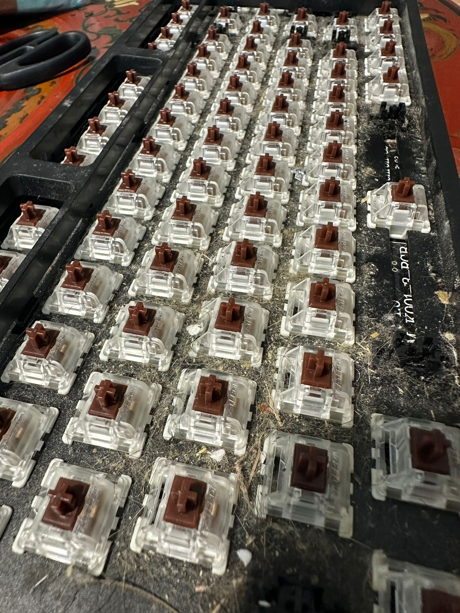

Introduction
After shifting into my new home, we enjoyed the honeymoon period for about 4 - 6 weeks. After that, we needed to settle in and figure out the proper workflows on how we can actually get things done within our house (no longer feel like a holiday home ><).
Predominantly working from home, setting up my home workspace was one of the most important things. So I got started on it, which includes setting up my Desk, Monitors, Keyboards and other necessary peripherals.
Whilst giving my Mechanical Keyboard a wipe, I noticed that the Mechanical keyboard was not at it’s most hygienic state haha.

So this calls for some heavy duty cleaning. These were the steps done:
- Remove all keycaps and wash them in warm water
- Brush off the dirt with a soft bristle tooth brush
- Blow off the remaining dust with compressed air
- Wipe the topboard and switches with a damn cloth
- Remove the side skirt
- Remove the switches
- Remove the topboard
- Wipe down the topboard, side skirt with warm water
- Re-assemble the keyboard
Removal of Key Caps
The removal of keycaps should ideally be performed using a key cap puller. This would save you time, and minimize any potential damage.
But I was not well equipped, so I pinched off each keycaps manually using my fingers – not the most productive.
The keycaps were then soaked in warm soapy water, to wash off any grime. Afterwhich, they were left to dry to ensure no moisture remains when we attach them back to the switches.
My wife was kind enough to lend out her chopping board to be used as a platform to dry my key caps! 
Sweep, Vacuum and Mop
After this exercise, it was clear to me that any cleaning protocol would follow these 3 steps:
- Sweep away the big chunk of particles
- Vacuum up the small chunk of particules
- Mop to ensure final polish
For those whom are diligent house chore do-ers, this would be a familiar workflow. For me – it was a revelation lol.

Sweep
The keyboard was completely filthy – full of dust, and bunny fur. A simple google search advised me to first brush off away all the dust with a soft-bristle tooth brush.
I diligently performed the abovementioned activity ^^ – swept away the big particles in the keyboard as much as I could.

Vacuum
Now that all the large particules are gone, we proceed to the vacuum phase. Here, the google search was telling me to blow of any remaining particles with compressed air.
Failing to obtain compressed air cans, I decided to use the Dyson V12 vacuum to suck out the particules. Although not as efficient as a compressed air can, it got the job done.

Mop
Lastly, google informed me that I should wipe the keyboard with a warm damp cloth (but ensure the cloth is not too damp). Apparently electronics and moisture do not go well together.
So, I mopped the keyboard using a damp cloth that was wrung dry!

Wipe down remaining components
Next, I want to proceed to wipe down the remaining components such as the top board, side skirt etc. But I realized that we have to remove the switches before removing the top board.
Removing Switches
Removing switches should utilize a switch remover – looks like a keycap puller. Again, this saves time, and minimize chance of damange.
But being unprepared, we proceed with the old schoool screwdriver:

Dismantled Components
Only after removing all the switches (which took ages without the key cap puller), we managed to dismantle all the other components – and proceed with a good wipe down.

PCB Wipe Down
Note that we did not wipe down the PCB with a damp cloth. Google advised to only use compressed air or soft bristle tooth brush to clean the PCB.
We only used a soft-bristle tooth brush, to sweep away large particles.
We did not use a vacuum to suck up the smaller particles from the PCB, as the static generated from the vacuum could potentially damage the PCB. Not sure how true – but did not take the risk.
Re-assemble Keyboard
Now that everything is sparkling clean, we need to re-assemble the keyboard. But similar to software development, we should test and ensure that the PCB is working before re-assembling (because if something fails, you would have to disassemble everything to fix it).
Testing the PCB
And as murphy’s law holds true, the Enter key was not working when we tested it.
The test was performed by connecting the two electrods behind the PCB using an aluminium foil:
- If the LED light switches on, connectivity works
- If the LED light does not switch on, connectivity breaks
Example of a successful connectivity check:

Example of a failed connectivity check (The Enter Key):

Assessment of Issues
We also noticed that the connectivity check is successful, when we bend the PCB. Screenshot below shows the PCB bent by applying pressure in the middle, and hitting down on the switch to see if the Enter button LED lights up:

This suggest that either there is a poor soldering job, or a broken trace (connectivity). Probably due to my handling of the keyboard lol.
So, do the above activities at your own risk haha!
Workaround
As I don’t have any soldering equipment or expertise, bending the PCB was a good workaround for me. This was what I did:
- Created a wedge from a piece of paper (folded multiple times)
- Put pressure on the PCB with the wedge in between the PCB and the bottom case
See the wedge placed at the bottom case:

Putting pressure between the PCB and the bottom case (with the wedge inbetween), we tested the Enter key once more. Fortunately, the LED lighted up when we hit the switch

Complete re-assembly
Now that we can be relatively confident that all the switches are working, we proceed to:
- Attach the top board
- Attach all the switches
- Verify all the switches once more – and yes! The
Enterkey works this time round - Attach the side skirt and the key caps
The complete set-up looks as follows:

Thank you!
Thanks all for taking your time to read. Enjoyed creating this piece, and definintely not an expert in mechanical keyboards.
As I go along exploring more on this front, might update this article to include further details.
Until then, peace and love
Shafik Walakaka